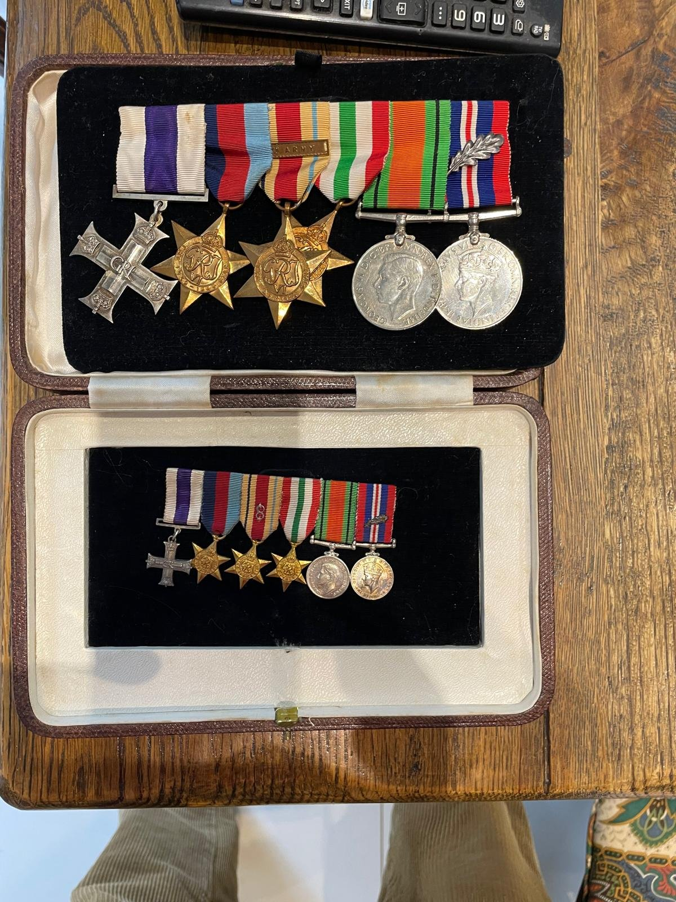
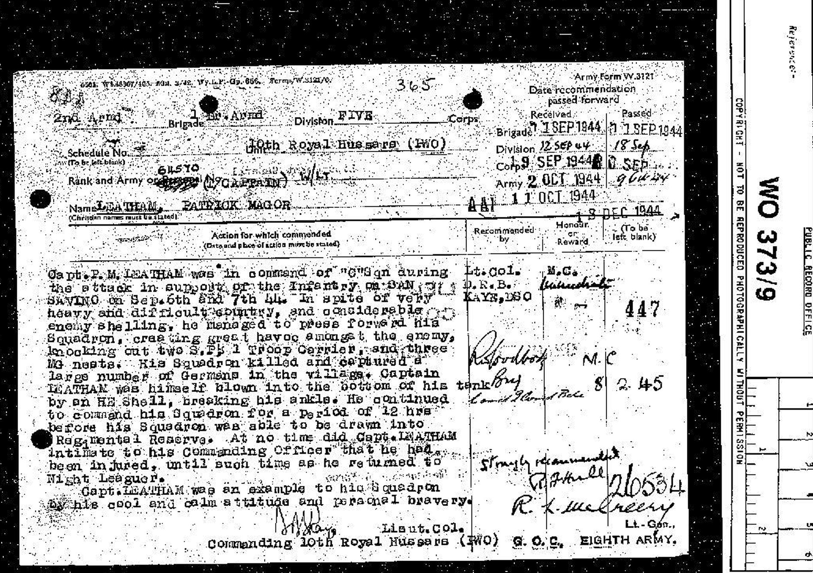

Tank squadron commander of the Italian campaign; decorated for gallantry at San Savino, September 1944.
He led C Squadron of the 10th Royal Hussars into the village of San Savino, on the Coriano Ridge, on 6 and 7 September 1944. It was the tail of an attack afterwards called an armoured Balaklava: in the opening charge two days earlier, 1st Armoured Division had lost seventy-nine of its one hundred and forty tanks. For pressing forward, knocking out German troop carriers and machine-gun positions, and continuing to command his squadron for twelve hours after a shell blew him to the floor of his tank and broke his ankle, Captain Leatham was awarded the Military Cross. He was thirty years old. He had six years left to live.

The medals came down through the family in the fitted leather case in which they had been mounted after the war. They are read from the wearer's right — furthest from the heart — to left, in the order in which he wore them.
Awarded for an act of exemplary gallantry against the enemy on land. The GRVI cypher at the centre of the silver cross dates it to the reign of George VI. Gazetted 8 February 1945.
For operational service during the Second World War. The ribbon — dark blue, red, light blue — represents the Royal Navy, Army, and Royal Air Force.
For operational service in North Africa. The clasp, a silver bar on the ribbon, denotes service under Montgomery's Eighth Army — authorised only for those who fought between the opening of the Second Battle of El Alamein in October 1942 and the Axis surrender in Tunisia in May 1943.
For operational service in the Italian campaign, 1943–1945. The ribbon is the Italian tricolour.
For non-operational service — typically three years in the United Kingdom, or six months overseas in a non-operational theatre.
For twenty-eight or more days of full-time service. The bronze oak leaf emblem worn on the ribbon signifies a Mention in Despatches — a separate recognition, gazetted in its own right.
Patrick Magor Leatham was born on 15 September 1914, the son of Captain Cecil Maxwell Leatham and Dorothy Grace née Magor — his middle name preserving hers. Through his paternal grandfather, Samuel Gurney Leatham of Hemsworth Hall (1840–1919), he descended from the Yorkshire Leathams, a family of Quaker-origin bankers with their seat at Wentbridge House near Pontefract. His elder sister, Honor Catherine Leatham, had been born in 1912.
He was first commissioned on 31 January 1935 into the 16th/5th Lancers, and transferred on 22 August 1936 to the 10th Royal Hussars (Prince of Wales's Own), the senior English hussar regiment, raised in 1715. Promoted Lieutenant on 31 January 1938, he served with the regiment through its mechanisation from cavalry to 2nd Armoured Brigade, 1st Armoured Division, in the Royal Armoured Corps. He was one of relatively few officers to serve with the regiment unbroken from mobilisation to the last months of the war.
On 6 April 1940 — in the quiet months before the German invasion of France — he married the Hon. Cecily Eveline Berry, nineteen years old and daughter of the late Henry Seymour Berry, 1st Baron Buckland. Lord Buckland had been one of three brothers who built an extraordinary industrial and newspaper empire: his elder brother was the 1st Viscount Camrose, proprietor of The Daily Telegraph; his younger brother the 1st Viscount Kemsley, proprietor of The Sunday Times.
The couple had three sons: Simon Patrick (born 9 November 1944, during the Italian campaign), Philip William (born 30 August 1946), and Jonathan Grant (29 November 1948 – 30 July 2020).
Through the Western Desert Patrick served as Technical Adjutant of the regiment — the officer responsible, with the fitters, for keeping the tanks running and salvaging what could be salvaged under fire. The regimental history singles him out for praise at the Second Battle of El Alamein, where he and the Regimental fitters "carried out running repairs most gallantly while under fire." After Alamein he became Second-in-Command of B Squadron; in Italy he took command of C Squadron, fought the San Savino action described below, and was promoted Major in November 1944, taking over B Squadron for the final offensive through the Argenta Gap to the Po. He is also named in the regimental history's appendix of those Mentioned in Despatches — the oak leaf emblem worn on the ribbon of his War Medal.
His father Cecil had died at Woking in September 1941, during the war. After 1945 Patrick remained in the regular army, gazetted substantive Captain on 1 January 1949. He died on 17 August 1951, aged thirty-six, still a serving officer. Cecily later remarried Richard Ian Griffith Taylor, taking his name; she died in October 1975.
The recommendation for the Military Cross was signed by Patrick's commanding officer, endorsed by Lieutenant Colonel D. R. B. Kaye DSO, and marked "strongly recommended" by Lieutenant-General Sir Richard McCreery, General Officer Commanding, Eighth Army. It was gazetted on 8 February 1945. The original recommendation form is preserved at The National Archives, Kew, as WO 373/9, item 447.

Captain P. M. Leatham was in command of "C" Squadron during the attack in support of the Infantry on San Savino on September 6th and 7th '44. In spite of very heavy and difficult country, and considerable enemy shelling, he managed to press forward his Squadron, creating great havoc amongst the enemy, knocking out two SPW 1 Troop Carrier, and three MG nests. His Squadron killed and captured a large number of Germans in the village.
Captain Leatham was himself blown into the bottom of his tank by an HE shell, breaking his ankle. He continued to command his Squadron for a period of 12 hrs before his Squadron was able to be drawn into Regimental Reserve. At no time did Captain Leatham intimate to his Commanding Officer that he had been injured, until such time as he returned to Night Leaguer.
Captain Leatham was an example to his Squadron by his cool and calm attitude and personal bravery.
— Signed by the Commanding Officer, 10th Royal Hussars (P.W.O.)
By the late summer of 1944 the Italian campaign had reached the Gothic Line — the last great German defensive position in northern Italy, running from the Ligurian coast across the Apennines to the Adriatic. On the Adriatic flank, British Eighth Army's advance had stalled on the Coriano Ridge, a hilly spur that was the final obstacle before Rimini and the open country of the Po Valley beyond.
On the afternoon of 4 September 1944, under orders from Major-General Richard Hull, commanding 1st Armoured Division, the three armoured regiments of 2nd Armoured Brigade advanced in line across an unreconnoitred start line at 1545 hrs: the Queen's Bays on the left, and Patrick's 10th Hussars on the right, with the 9th Lancers in reserve. Intelligence had suggested the position was lightly held. It was not — and the Hussars' opening attack failed, with heavy casualties in tanks and men. Over the next two days, careful anti-tank fire and shelling from the ridge continued to grind the brigade down; in all, 1st Armoured Division lost seventy-nine of its one hundred and forty tanks. The historian Patrick Mercer has called it an armoured Balaklava. The division was so badly mauled that it was shortly afterwards disbanded.
On 6 and 7 September, with the brigade reorganising behind the ridge, Patrick's C Squadron and B Squadron were sent forward to support the 18th Lorried Infantry Brigade in clearing San Savino itself. According to the regimental history, the two squadrons killed and captured some forty-five Germans in the village. The citation — terse, understated — is the record of what happened to Patrick next. He was thirty years old, four years married, and with a first son on the way he would not meet until November. He stayed with his men for twelve hours after the shell knocked him to the floor of his tank, and only at night leaguer, when the squadron was relieved, did he admit that he had been injured.
A fuller account of the action, the broader Gothic Line battle of which it formed a part, and the tactical failure that produced such heavy losses is given in Patrick Mercer's "An armoured Balaklava: Lessons from the Gothic Line", Military History Matters (Issue 141, July 2024).
This page draws on open sources and on the original Army Form W.3121 held at The National Archives. Researchers wishing to go further may find the following useful.